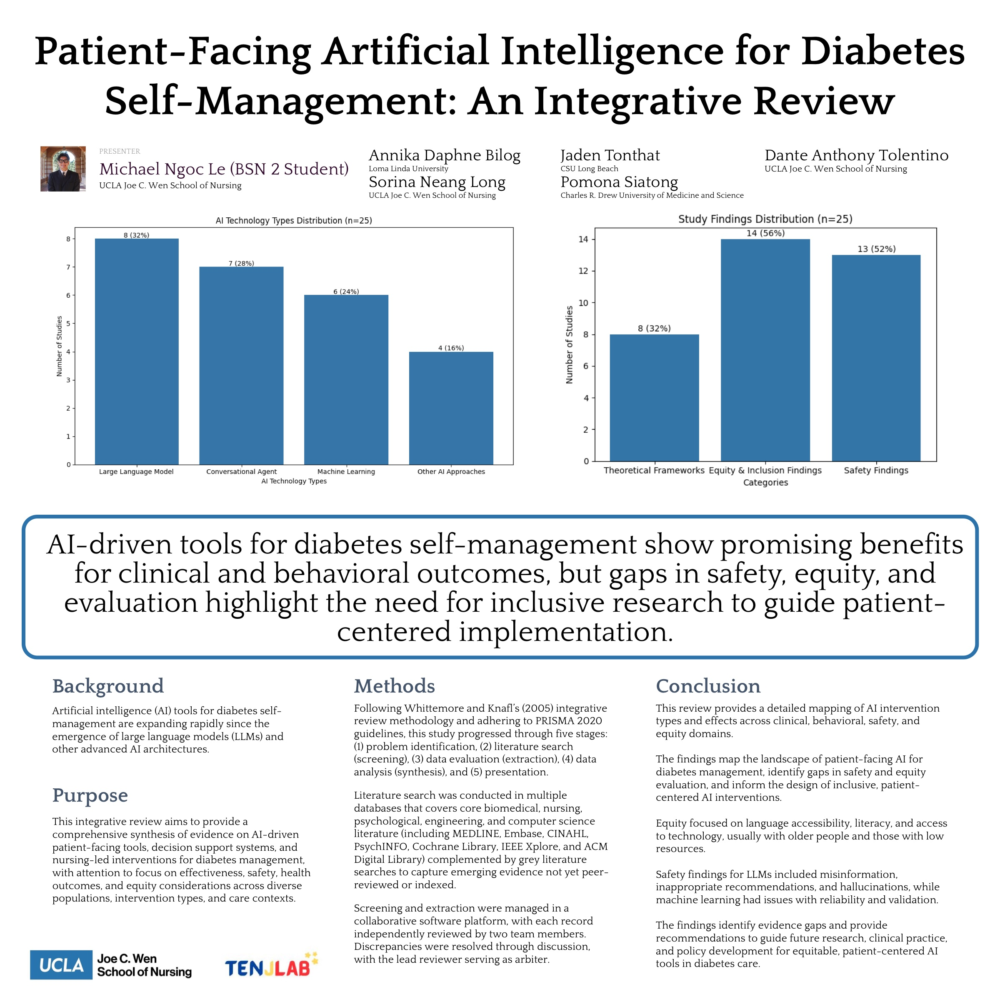

Poster · Western Institute of Nursing · 2026
AI tools like chatbots and large language models could help people manage diabetes, but they are not yet safe or fair enough for everyone, and they need more careful, inclusive testing before everyday use.
Can artificial intelligence safely help people manage diabetes? Our team reviewed 25 studies on patient-facing AI tools, such as chatbots and large language models, for diabetes self-management. These tools showed real promise for improving health and daily habits, but the review also found important gaps: some gave inaccurate or unsafe advice, and many were never tested with older adults, people with limited access to technology, or people who do not speak English. The bottom line is that AI tools need more careful, inclusive testing before they can be trusted for everyday diabetes care.
Following an established integrative review method (Whittemore and Knafl) and the PRISMA 2020 reporting guidelines, the team searched seven major databases spanning medicine, nursing, psychology, engineering, and computer science (including MEDLINE, Embase, CINAHL, PsycINFO, the Cochrane Library, IEEE Xplore, and the ACM Digital Library), plus grey literature to capture newer work not yet indexed.
Two reviewers independently screened and extracted each record, resolving disagreements through discussion. The 25 included studies were grouped into AI types (large language models, conversational agents, machine learning, and other approaches) and analyzed for effectiveness, safety, and equity.
AI tools showed benefits for clinical and behavioral diabetes outcomes across a range of approaches.
Large language models sometimes produced misinformation or inappropriate advice, and machine-learning tools had reliability and validation concerns.
Few tools were tested for language access, health literacy, or with older adults and people who have limited access to technology.
